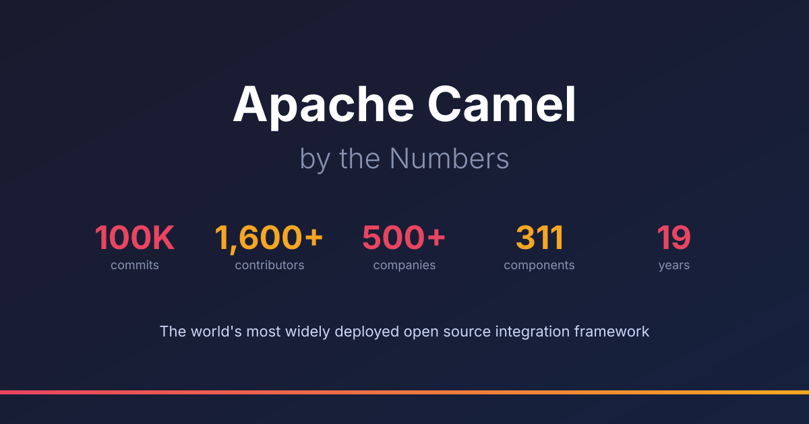

When the first commit landed on March 19, 2007, Apache Camel was a routing library with a handful of components and a single contributor. Nineteen years later, the git repository has crossed 100,000 commits from 1,500+ contributors representing 450+ companies across more than 20 countries. The project ships 311 integration components, has published 300+ releases, and runs in production at organizations where downtime means grounded flights, blocked payments, or missed diagnoses.
These aren’t marketing estimates. Every number in this post is verifiable from the git repository, OpenHub, Stack Overflow, and GitHub. We ran the queries. Here’s what the data says.
450+ Companies Contribute Code
The most revealing statistic isn’t the commit count — it’s the 450+ distinct corporate email domains that appear in the git history as commit authors or co-authors — and that’s just the provable floor. Many more contributors use personal email (gmail) or GitHub’s privacy-masked addresses, as is standard practice in open source. These are engineers who hit a bug, wrote a fix, and contributed it back using their company email. IBM, SAP, Huawei, Nokia, Bosch, Tesco, Target, JD.com, ING Bank, BBC, BP, Rivian, PostNord, Thales, AB InBev — the list spans every industry and continent.
Companies don’t contribute patches to software they evaluate. They contribute to software that runs in production. When a BP engineer fixes an HTTP response handling issue and signs the commit with @bp.com, that’s evidence of production usage that no case study or marketing page can match.
Beyond the git history, 11,700+ Stack Overflow questions tagged apache-camel confirm a large, active developer community asking real implementation questions — not tire-kickers, but engineers building systems.
Still Growing After 19 Years
Open source projects typically follow a lifecycle: rapid early growth, a plateau, then decline as the next shiny framework appears. Camel defied this pattern. The 2019–2023 period saw the highest commit volumes in the project’s history — peaking at nearly 9,000 commits in 2020 alone. More significantly, 192 developers made their first contribution in 2020. Contribution levels have naturally settled from that peak — a trend visible across many open source projects as AI coding assistants enable existing maintainers to be significantly more productive, reducing the volume of external contributions needed. But even in 2025, 73 new contributors joined — the project continues to attract fresh talent two decades in.
The sustained contribution rate is partly explained by Camel’s architecture. With 311 independent components, contributors can work on camel-kafka without understanding camel-salesforce. The barrier to entry is a single component, not the entire framework. This modular structure turns what could be an intimidating 8.8-million-line codebase into hundreds of manageable, focused projects.
Where the Code Runs
Numbers on a screen mean nothing without context. Here’s where Camel actually runs:
UPS processes tens of billions of messages per day on Apache Camel — the largest known Camel deployment by message volume.
CERN uses Apache Camel for the Large Hadron Collider’s control systems — 190 million messages per day across 85,000 machines with 99.98% uptime. As their principal JMS engineer put it: “If there is no JMS there is no particle physics.”
IndiGo, India’s largest airline, uses Apache Camel to integrate 400+ applications — from ticket booking to crew scheduling to load calculation — with zero downtime. The result: ₹500 million per year saved in fuel costs through more accurate predictions, and post-flight crew reporting cut from 30 minutes to 5.
Systematic, one of Denmark’s largest software companies, uses Camel as the integration layer for the Columna CIS electronic patient record system serving 3 of 5 Danish regions — 60,000 healthcare professionals caring for 3.2 million citizens.
The User Stories page now documents 100+ organizations across healthcare, financial services, aviation, energy, government, retail, logistics, and media — from Fortune 10 companies to national governments.
39% Tests
Of the 56,000+ Java files in the repository, 22,000 are test files — 39% of the entire codebase. That ratio reflects a project culture where reliability is non-negotiable. When your users include air traffic control systems (FAA), nuclear research facilities (CERN), and airlines integrating 400+ applications (IndiGo), every commit gets tested.
The project maintains multiple Long-Term Support (LTS) release lines simultaneously. Each LTS line receives security fixes and critical bug fixes for approximately one year. Migration guides are published for every major version. Backwards compatibility is taken seriously — because breaking changes at CERN or UPS aren’t an option.
What the Numbers Mean for Developers
If you’re evaluating Apache Camel for a project, the numbers tell you three things:
1. You’re not alone. 1,500+ contributors, 450+ companies, and 11,700+ Stack Overflow questions mean that whatever problem you hit, someone has likely hit it before. The community is large enough that questions get answered, bugs get fixed, and components stay maintained.
2. It won’t disappear. Projects with one maintainer or one corporate sponsor carry risk. Camel has survived the transitions from SOA to microservices to cloud-native to AI agents — not by pivoting, but by adding components for each new paradigm while keeping the core stable. The Apache Software Foundation governance ensures no single company can acquire, pivot, or shut down the project.
3. It scales from prototype to national infrastructure. The same framework that runs with camel jbang run hello.yaml on your laptop processes tens of billions of messages per day at UPS. That’s a deployment range few frameworks can match.
The Full Data
For transparency, here are the complete statistics from the git repository and public sources.
Repository Statistics (June 2026)
| Metric | Core Repo | All Repos (Core + Spring Boot + Quarkus + K) |
|---|---|---|
| Total commits | ~100,000 | ~166,000 |
| Contributors (unique emails) | 1,500+ | — |
| Corporate email domains | 450+ (author + co-author, provable floor) | — |
| Integration components | 311 | — |
| Java source files | 56,169 | — |
| Test files | 21,939 (39%) | — |
| Lines of Java code | 8.8 million | — |
| Release tags | 301 | — |
| JIRA issues referenced | 17,194 | — |
Public Online Sources
| Source | Metric | Value |
|---|---|---|
| GitHub | Stars | 6,200+ |
| GitHub | Forks | 5,100+ |
| OpenHub | Assessment | “well-established, mature codebase, very large development team” |
| Stack Overflow | Questions | 11,700+ |
Commits Per Year
| Year | Commits | Active Contributors | New Contributors |
|---|---|---|---|
| 2007 | 1,177 | 7 | 7 |
| 2008 | 2,122 | 12 | 8 |
| 2009 | 3,313 | 14 | 4 |
| 2010 | 2,554 | 18 | 5 |
| 2011 | 3,230 | 26 | 9 |
| 2012 | 3,983 | 24 | 4 |
| 2013 | 4,235 | 50 | 33 |
| 2014 | 4,099 | 99 | 78 |
| 2015 | 4,995 | 144 | 95 |
| 2016 | 5,596 | 199 | 157 |
| 2017 | 5,337 | 213 | 155 |
| 2018 | 4,607 | 191 | 125 |
| 2019 | 7,887 | 226 | 160 |
| 2020 | 8,882 | 269 | 192 |
| 2021 | 6,973 | 236 | 148 |
| 2022 | 7,142 | 224 | 121 |
| 2023 | 8,208 | 221 | 120 |
| 2024 | 6,563 | 165 | 81 |
| 2025 | 5,282 | 153 | 72 |
Country Representation (from email domain TLDs)
France, Brazil, United Kingdom, Germany, Italy, Netherlands, Finland, Russia, Poland, New Zealand, Denmark, Switzerland, Austria, Sweden, Spain, Belgium, Australia, Romania, Czech Republic, and more.
Third-Party Technology Tracking
Several independent technology tracking services detect Apache Camel usage across their datasets. Each uses different detection methods (web signals, job postings, technology fingerprinting), which accounts for the variation in numbers:
| Source | Companies using Camel |
|---|---|
| Enlyft | 8,611 |
| ReadyContacts | 6,386 |
| TheirStack | 4,721 |
| Reo.Dev | 4,106 |
| 6sense | 3,060 |
6sense provides additional detail: of the 3,060 companies they track, 714 have 10,000+ employees and 572 have 1,000-4,999 employees. The top countries are the United States (49%), United Kingdom (9%), and Brazil (9%).
GitHub Stars
The apache/camel repository has 6,200+ stars on GitHub. If you use Camel and haven’t starred the project yet, we’d appreciate it — it helps others discover the project and signals to the open source community that Camel is actively used and valued.
Add Your Organization
If your company or organization uses Apache Camel and would like to be featured on the User Stories page, we’d love to hear from you. Reach out on the mailing list, open a pull request on camel-website, or contact us on Zulip chat. A one-line description and a link to a public reference (blog post, case study, conference talk, or even a LinkedIn post) is all we need.
All statistics in this post are derived from the Apache Camel git repository, OpenHub, Stack Overflow, and the GitHub API. The data was collected in June 2026.